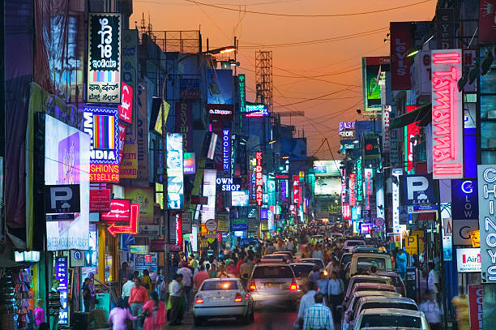
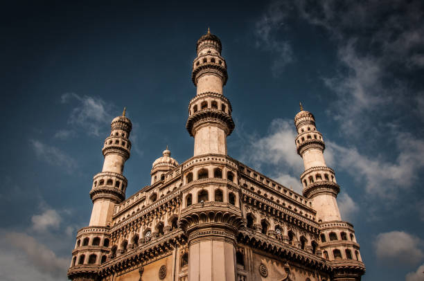
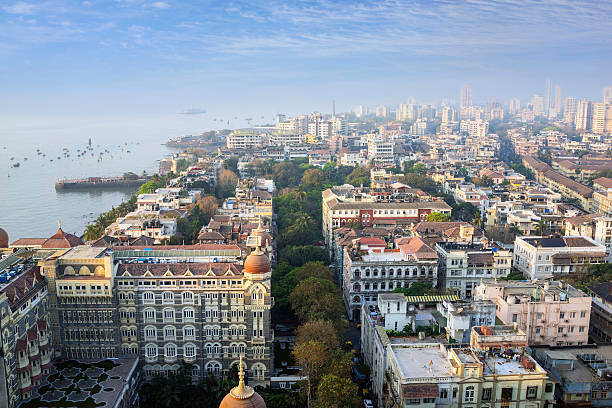
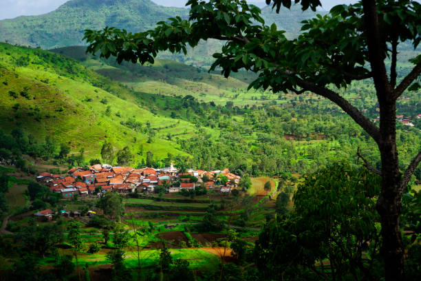

|  | Bangalore, also known as Bengaluru (Kannada) is the capital of the Indian State of Karnataka. Bangalore is nicknamed the Garden City and was once called a Pensioner's Paradise. Located on the Deccan Plateau in the south-eastern part of Karnataka, Bangalore is India's third most populous city. |
|  | Hyderabad served as the imperial capital of the Asaf Jahis from 1769 to 1948. As capital of the princely state of Hyderabad, the city housed the British Residency and cantonment until Indian independence in 1947. |
|  | Mumbai, previously known as Bombay is one of the most populous and biggest cities of Maharashtra. Also the biggest metropolis of this state, Mumbai is also popular as the entertainment and financial capital. It is the largest city of India and fondly called as the city of dreams. |
|  | Pune, also called Poona, city, west-central Maharashtra state, western India, at the junction of the Mula and Mutha rivers. Called “Queen of the Deccan,” Pune is the cultural capital of the Maratha peoples. The city first gained importance as the capital of the Bhonsle Marathas in the 17th century. |